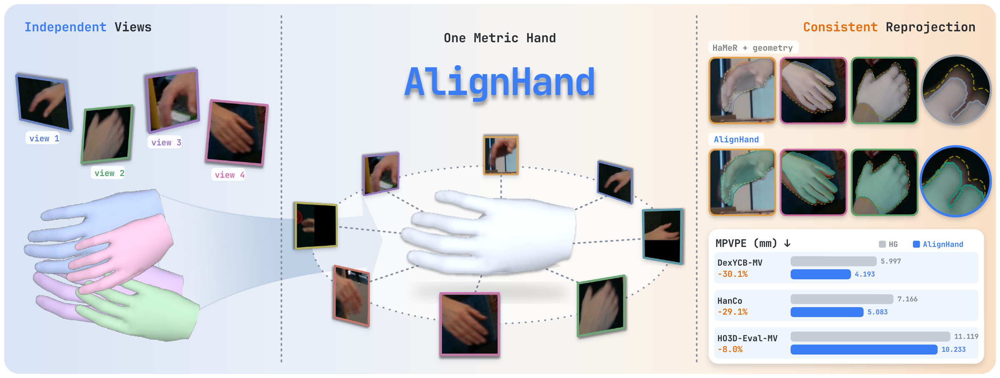
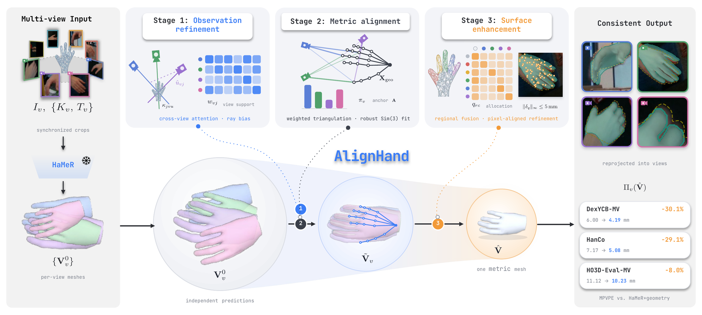
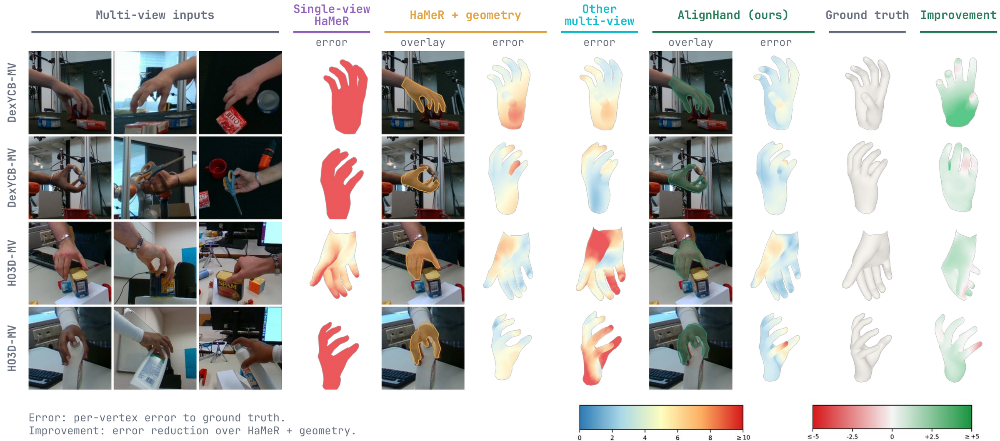
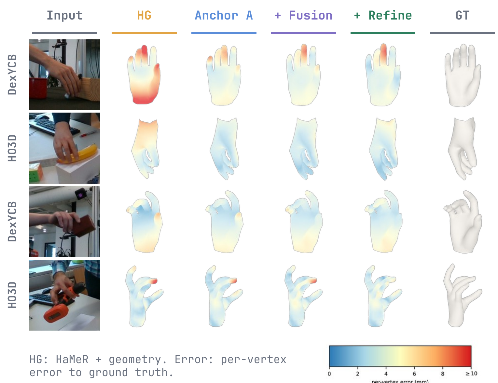
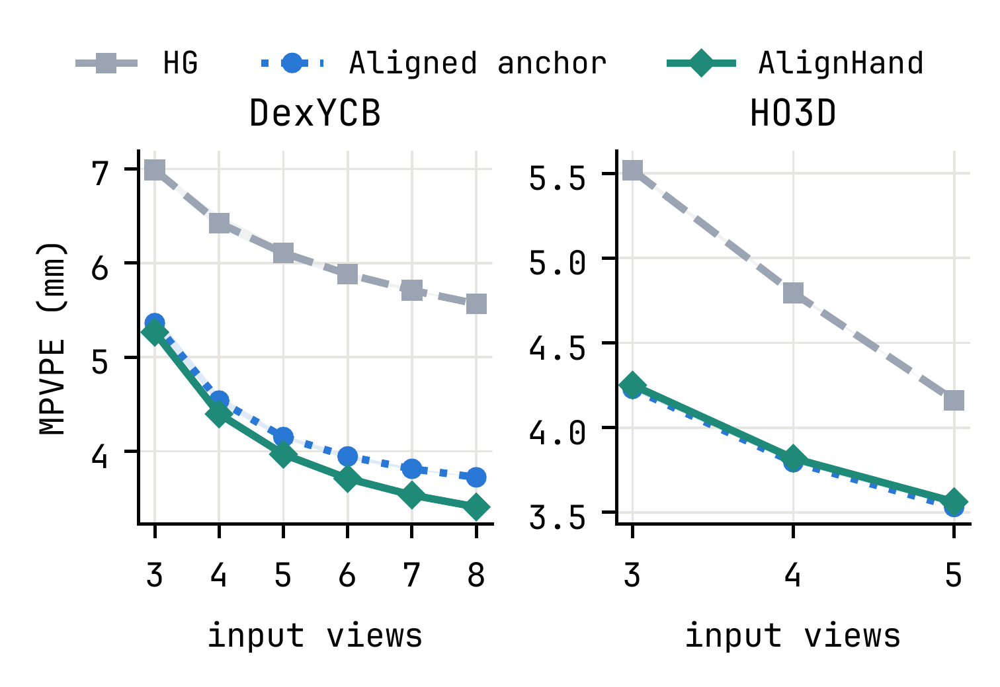

From independent monocular predictions to one metric hand.
Abstract
Modern monocular hand estimators recover detailed 3D meshes from individual images, yet effectively leveraging their predictions across multiple views remains challenging. Independently predicted meshes can disagree in scale, placement, and articulation, limiting the integration of complementary multi-view information. Hence, we present AlignHand, a calibrated multi-view framework that builds on a frozen monocular hand reconstruction prior to align and enhance its predictions. Specifically, AlignHand refines cross-view joint observations and estimates their reliability to establish a shared metric reference for alignment. Once the meshes are brought into a common frame, their complementary surface evidence is selectively fused across anatomical regions, followed by pixel-aligned refinement that predicts bounded residual displacements from local image features. This global-to-local integration enables AlignHand to exploit complementary observations while preserving the strong monocular prior. Extensive experiments on DexYCB-MV, HanCo, and HO3D-Eval-MV demonstrate that AlignHand achieves the lowest MPVPE and MPJPE among the compared methods under the respective evaluation protocols, reducing MPVPE by 30.1%, 29.1%, and 8.0%, respectively, compared with a matched geometry baseline.
Method

Observation refinement
Joint-level tokens from every view attend to each other under a geometry-aware bias. The model predicts bounded 2D joint corrections and a per-joint support weight for each view.
Metric alignment
Support-weighted triangulation gives a shared metric skeleton. Each per-view mesh is placed on it by a similarity fit, and a fit-aware anchor favors predictions that are well supported and agree with the skeleton.
Surface enhancement
Anchor-centred regional fusion re-weights the aligned candidates separately for the palm and each finger. Pixel-aligned refinement then adds bounded residuals (at most 5 mm per coordinate) from local image features.
Frozen monocular backbone · 0.98M trainable integration parameters · One shared integration model
The shared model is trained on the pooled training splits of DexYCB, HanCo, and HO3D.
Results
MPVPE / MPJPE (mm, lower is better) of one shared model on three test sets.
| Dataset | Views | HG | AlignHand | MPVPE reduction |
|---|---|---|---|---|
| DexYCB-MV | 8 | 5.997 / 5.892 | 4.193 / 4.090 | 30.1% |
| HanCo | 8 | 7.166 / 6.643 | 5.083 / 4.587 | 29.1% |
| HO3D-Eval-MV | 5 | 11.119 / 10.875 | 10.233 / 9.882 | 8.0% |
Table 1. HG (HaMeR + geometry) uses the same frozen HaMeR predictions, crops, calibration and similarity fitting, so the comparison isolates the gain from integration. Each dataset follows its own evaluation protocol; HanCo uses root-translation alignment. HO3D-Eval-MV is the primary HO3D evaluation because HO3D-MV shares camera sequences with HaMeR's training data. Comparisons with published multi-view methods are in the paper.

Ablation Study
Development-set MPVPE (mm, lower is better) of the shared model.
| Configuration | DexYCB | HO3D |
|---|---|---|
| Geometry baseline (HG) | 5.567 | 4.161 |
| Aligned anchor | 3.724 | 3.532 |
| + Regional fusion | 3.545 | 3.449 |
| + Pixel-aligned refinement (AlignHand) | 3.409 | 3.562 |
Table 2. Successive reconstruction stages. Most of the gain comes from alignment; regional fusion helps on both datasets, while pixel-aligned refinement has dataset-dependent effects.
| Observation refinement (anchor only) | DexYCB | HO3D |
|---|---|---|
| Correction + predicted support | 3.724 | 3.532 |
| No correction; predicted support | 4.398 | 3.837 |
| Correction; uniform support | 4.345 | 3.628 |
| No correction; uniform support | 5.540 | 4.155 |
Table 3. Fixed-checkpoint interventions at the anchor. Both the 2D correction and the predicted view support contribute; the final row differs from HG only in anchor weighting.


BibTeX
@misc{yang2026alignhand,
title = {AlignHand: Multi-View Hand Reconstruction from a Frozen Monocular Prior},
author = {Yang, Zhilu and Yang, Kun and Wang, Shiyan and Xu, Anqi and Huang, Xinran
and Jiao, Yizheng and Yang, Huan and Potamias, Rolandos Alexandros},
note = {arXiv preprint},
year = {2026}
}